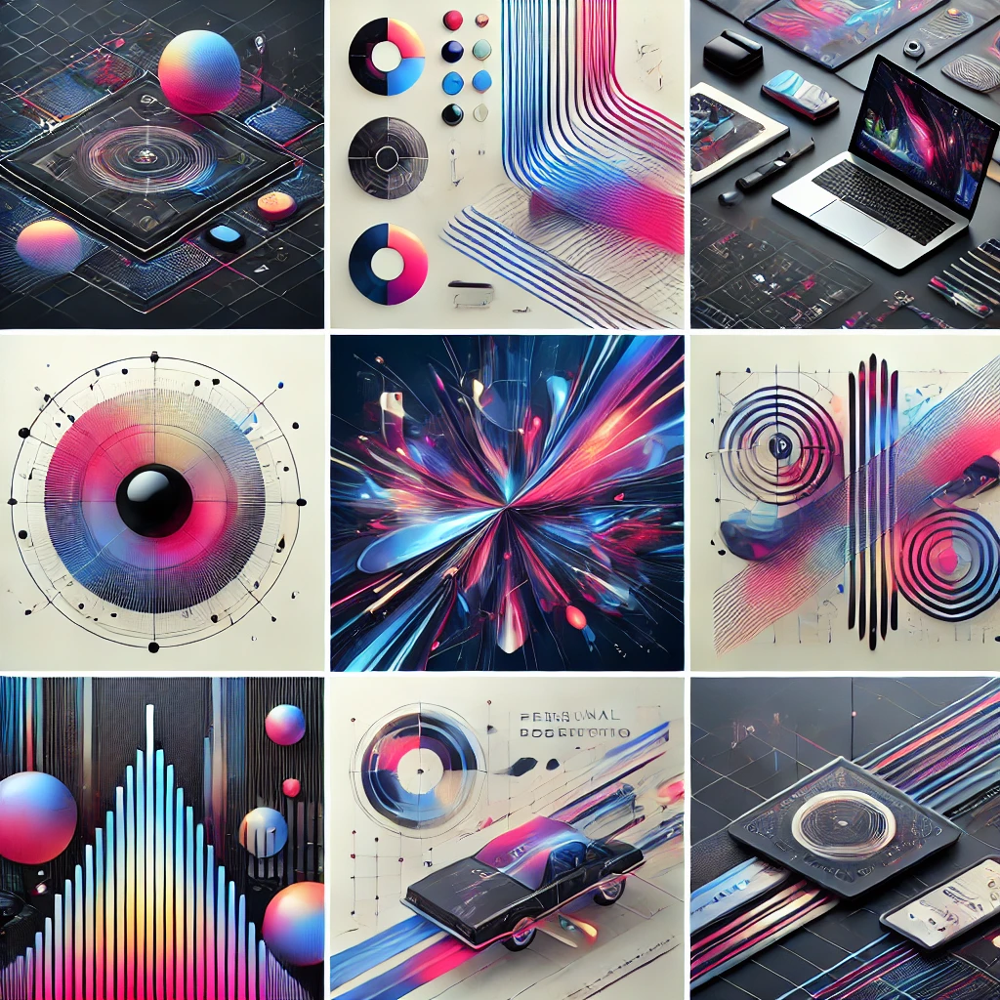
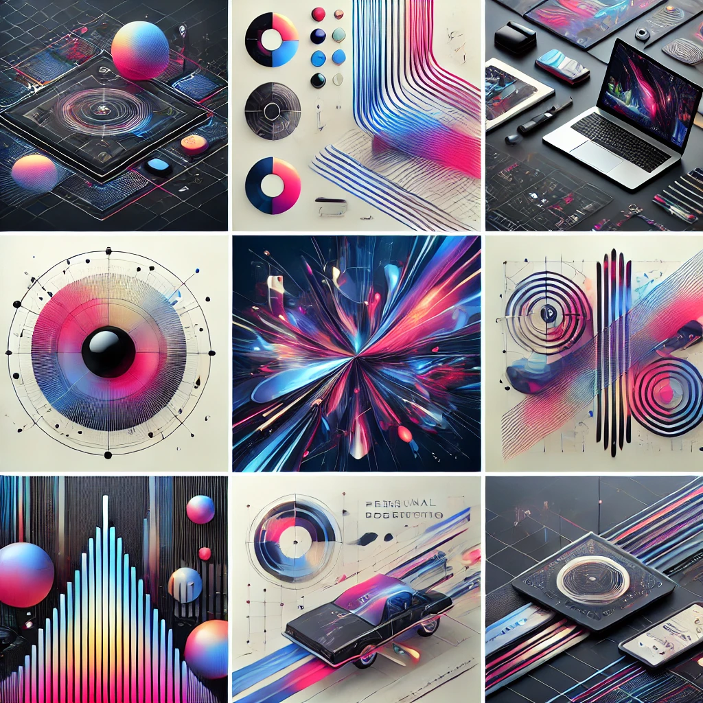

I'm AhnJaeHo
Being a programmer
Portfolio Website

Portfolio Website


끊임없이 도전하며 성장하는 풀스택 개발자입니다.
Java와 Spring Framework를 기반으로 한 웹 애플리케이션 개발 경험과
React, Next.js를를 활용한 프론트엔드 설계 역량을 갖추고 있습니다.
프로젝트를 통해 사용자 중심의 UI/UX와 안정적인 백엔드 시스템을 구현하며,
AWS, Docker, Render 등을 활용한 배포 경험도 보유하고 있습니다.
Python과 FastAPI를 활용한 백엔드 API 구축 및 배포 경험이 있으며, 데이터 분석을 위한 Pandas, Selenium, BeautifulSoup 활용 경험도 있습니다.
새로운 기술과 문제 해결을 통해 함께 성장할 수 있기를 기대합니다.


🔹 객체지향 프로그래밍을 적용하여 효율적인 시스템을 설계하고 구현한 경험이 있습니다.
🔹 Stream API 및 컬렉션 프레임워크를 활용하여 데이터 처리 속도를 최적화했습니다.
🔹 Servlet & JSP 기반의 MVC 패턴을 활용하여 웹 서비스를 개발하고 유지보수하였습니다.
🔹 HTTP 요청 방식 (GET, POST)을 분석하고 최적화하여 데이터 필터링 및 조건 검색 기능을 설계하였습니다.
🔹 트랜잭션 관리 및 데이터베이스 연동을 최적화하여 안정성을 확보했습니다.
🔹 ES6+ 문법을 활용하여 가독성과 유지보수성이 높은 동적 UI를 개발했습니다.
🔹 DOM 조작과 이벤트 처리를 통해 사용자 경험을 개선하고, 비동기 통신(AJAX, Fetch API)을 적용하여 데이터 처리 효율을 높였습니다.
🔹 jQuery를 활용하여 동적 UI를 구성하고 JSON 데이터를 효과적으로 처리하여 반응형 웹 페이지를 구현했습니다.
🔹 쿠키 및 세션을 이용한 상태 관리 기능을 적용하여 보안성과 사용자 경험을 향상시켰습니다.
🔹 Flask 및 FastAPI를 활용하여 RESTful API를 설계하고 서버를 구축한 경험이 있습니다.
🔹 Pandas 및 NumPy를 사용하여 데이터를 분석하고 전처리하며, 대규모 CSV 데이터를 효과적으로 다루었습니다.
🔹 Selenium 및 BeautifulSoup을 활용하여 웹 크롤링을 통해 데이터 수집 및 자동화 작업을 수행했습니다.
🔹 SQLite 및 PostgreSQL을 연동하여 데이터 저장 및 관리를 최적화하고, ORM을 활용하여 데이터 모델링을 진행했습니다.
🔹 Flask-WTF 및 Pydantic을 적용하여 데이터 유효성 검사를 수행하여 안정성을 확보했습니다.
🔹 Next.js 및 React 기반 프로젝트에서 TypeScript를 활용하여 컴포넌트 구조를 설계하였습니다.
🔹 API 요청 및 응답 데이터의 타입을 정의하고, Interface 및 Utility Type을 활용하여 코드의 가독성과 안정성을 높였습니다.
🔹 제네릭 및 타입 가드를 적용하여 프로젝트 규모에 맞게 유연성과 유지보수성을 강화했습니다.

🔹 Spring MVC 기반 백엔드 개발을 수행하며 RESTful API를 설계한 경험이 있습니다.
🔹 JdbcTemplate을 활용하여 데이터 접근 계층을 최적화하였으며, AOP 기반 로깅 및 예외 처리를 적용했습니다.
🔹 Spring Security를 활용하여 사용자 인증 및 권한 관리 기능을 구축하였으며, 트랜잭션 관리를 통해 데이터의 일관성을 유지했습니다.
🔹 React를 활용한 SPA(단일 페이지 애플리케이션) 개발을 진행하였습니다.
🔹 Redux를 사용하여 상태 관리 및 컴포넌트 기반 UI 설계를 최적화했습니다.
🔹 JWT 인증을 적용하여 사용자 인증 및 보안성을 강화하고, 효율적인 데이터 처리 로직을 설계하였습니다.
🔹 Next.js를 활용하여 CSR 및 SSR 기반 웹 애플리케이션을 개발했습니다.
🔹 App Router를 활용한 폴더 구조 설계 및 동적 라우팅을 구현한 경험이 있습니다.
🔹 RESTful API와 연동하여 CRUD 기능을 포함한 웹 서비스를 구축하였습니다.
🔹 Flask-WTF를 활용하여 로그인 폼 유효성 검사 및 CSRF 방지 기능을 적용했습니다.
🔹 Flask-Migrate와 Alembic을 활용하여 데이터베이스 마이그레이션 및 버전 관리를 수행하였습니다.
🔹 Blueprint를 활용하여 모듈화된 애플리케이션 설계를 진행한 경험이 있습니다.
🔹 FastAPI를 활용하여 RESTful API를 개발하고 요청/응답 데이터 로깅 기능을 구현했습니다.
🔹 Pydantic을 이용하여 데이터 검증 및 스키마 관리를 수행했습니다.
🔹 Uvicorn 및 Gunicorn을 활용하여 서버 배포 및 최적화를 진행하였습니다.
🔹 Pandas를 활용하여 다양한 데이터 분석 및 전처리를 수행하였습니다.
🔹 결측치 처리, 그룹화, 통계 연산을 통해 데이터 정제 작업을 진행했습니다.
🔹 CSV 및 JSON 데이터를 효율적으로 관리하고, 데이터베이스와 연동하여 데이터를 분석하였습니다.
🔹 NumPy를 활용하여 대규모 배열 연산 및 데이터 변환을 최적화하였습니다.
🔹 벡터 연산을 최적화하여 데이터 처리 속도를 향상시켰으며, 다양한 수학적 연산을 적용하여 모델링에 활용하였습니다.
🔹 머신러닝 모델의 입력 데이터를 사전 처리하는 작업을 수행하였습니다.
🔹 Matplotlib을 활용하여 데이터 시각화를 수행하였습니다.
🔹 시계열 분석, 히스토그램, 바 차트, 스캐터 플롯 등을 통해 데이터를 효과적으로 표현하였습니다.
🔹 데이터 인사이트를 제공하기 위한 그래프 및 보고서를 제작하였습니다.

🔹 정규화를 기반으로 한 데이터 모델링을 수행하여 무결성을 유지하였습니다.
🔹 복잡한 SQL 쿼리를 최적화하여 데이터 검색 및 조작 속도를 향상시켰습니다.
🔹 AWS RDS를 이용하여 MySQL 데이터베이스를 운영하며 성능 최적화를 경험하였습니다.
🔹 JDBC를 활용하여 데이터 연동 및 트랜잭션 관리를 수행하였습니다.
🔹 DDL과 DML을 활용하여 테이블을 생성하고, 데이터 저장 및 조작을 최적화하였습니다.
🔹 ORM을 적용하여 객체와 데이터베이스 간 매핑을 진행하며 유지보수성을 높였습니다.
🔹 SQLite3에서 PostgreSQL로 Flask-Migrate를 활용한 데이터베이스 마이그레이션을 수행하였습니다.
🔹 AWS RDS와 Render를 활용하여 PostgreSQL 데이터베이스를 운영하며, 성능 및 안정성을 관리한 경험이 있습니다.
🔹 경량 데이터베이스인 SQLite3를 활용하여 소규모 애플리케이션을 구축한 경험이 있습니다.
🔹 Flask-SQLAlchemy와 연동하여 데이터 저장 및 관리 로직을 구성하였습니다.
🔹 로컬 개발 환경에서는 SQLite를 활용하고, 배포 환경에서는 PostgreSQL로 DB를 이관하여 안정적인 서비스 운영을 경험했습니다.

🔹 웹 페이지 구조를 설계하고, 콘텐츠를 논리적으로 배치하여 가독성을 향상시켰습니다.
🔹 웹 표준과 웹 접근성을 고려하여 사용자 친화적인 UI를 구현하였습니다.
🔹 시맨틱 태그를 활용하여 SEO 최적화된 웹 페이지를 개발한 경험이 있습니다.
🔹 반응형 디자인을 적용하여 다양한 디바이스에서 최적화된 UI를 제공하였습니다.
🔹 CSS Media Query를 활용하여 모바일, 태블릿, 데스크탑 환경에 적응하는 레이아웃을 설계하였습니다.
🔹 Flexbox 및 Grid 레이아웃 시스템을 활용하여 직관적인 UI 디자인을 구현하였습니다.
🔹 애니메이션 및 트랜지션 효과를 적용하여 동적인 사용자 경험을 제공한 경험이 있습니다.
🔹 Bootstrap을 활용하여 반응형 네비게이션 바, 캐러셀, 카드 UI 등을 설계하였습니다.
🔹 CSS Grid와 결합하여 반응형 UI 디자인을 최적화하였습니다.
🔹 Bootstrap 테마 및 커스텀 스타일링을 적용하여 프로젝트 요구사항에 맞춘 UI를 구현하였습니다.

🔹 Docker를 활용하여 컨테이너 기반 환경을 구축하고 배포를 자동화하였습니다.
🔹 Spring MVC 프로젝트의 CI/CD 파이프라인을 설계하고, 애플리케이션을 안정적으로 배포하였습니다.
🔹 FastAPI 및 Flask 애플리케이션을 Docker 컨테이너로 패키징하여 효율적으로 배포한 경험이 있습니다.
🔹 AWS EC2에서 Docker 컨테이너를 실행하여 백엔드 서버를 운영한 경험이 있습니다.
🔹 AWS EC2와 RDS를 활용하여 애플리케이션을 배포하고 운영하였습니다.
🔹 AWS RDS를 이용하여 데이터베이스 마이그레이션을 수행하였으며, 데이터 안정성을 확보하였습니다.
🔹 AWS S3를 활용하여 정적 웹 호스팅을 진행하고, 파일 백업 및 보관을 관리하였습니다.
🔹 AWS Route53을 이용하여 도메인을 설정하고 DNS 관리를 수행하였습니다.
🔹 FastAPI 백엔드를 AWS EC2에서 Docker 컨테이너로 배포한 후, 프론트엔드와 연결한 경험이 있습니다.
🔹 Next.js 프론트엔드를 EC2에서 배포한 후, CORS정책 고려해서, 백엔드 API와 연동하여 동작하는 환경을 구축하였습니다.
🔹 Render를 활용하여 Flask 및 FastAPI 애플리케이션을 배포한 경험이 있습니다.
🔹 CI/CD 자동화를 적용하여 배포 프로세스를 간소화하였으며, 서버 리소스를 효율적으로 관리하였습니다.

🔹 GitHub를 활용하여 코드 버전 관리 및 협업 프로젝트를 진행한 경험이 있습니다.
🔹 Git Flow 전략을 적용하여 브랜치 관리 및 PR 리뷰를 수행하였습니다.
🔹 GitHub Projects 및 Issues를 활용하여 작업 관리 및 태스크 트래킹을 진행하였습니다.
🔹 Postman을 활용하여 REST API 테스트 및 요청/응답 검증을 수행하였습니다.
🔹 다양한 API 엔드포인트를 테스트하고, 인증 및 권한 관리 로직을 검증하였습니다.
🔹 API 문서화 및 테스트 자동화를 통해 개발 효율성을 향상시켰습니다.
🔹 Visual Studio Code를 활용하여 다양한 개발 환경을 설정하고 디버깅을 수행하였습니다.
🔹 확장 프로그램을 활용하여 코드 생산성을 높이고, ESLint 및 Prettier를 적용하여 코드 스타일을 유지하였습니다.
🔹 Live Server를 활용하여 실시간 UI 변화를 확인하며 프론트엔드 개발을 진행하였습니다.
🔹 Jupyter Notebook을 활용하여 데이터 분석 및 시각화를 수행하였습니다.
🔹 Pandas 및 Matplotlib과 함께 사용하여 데이터 전처리 및 분석을 진행하였습니다.
🔹 머신러닝 프로젝트에서 데이터를 탐색하고 시각적으로 표현하는 데 활용하였습니다.
🔹 PyCharm을 활용하여 Python 개발 환경을 설정하고, 디버깅 및 코드 최적화를 수행하였습니다.
🔹 Flask 및 FastAPI 프로젝트를 개발하면서 서버 실행 및 API 디버깅을 진행하였습니다.
🔹 PyCharm 내장 터미널과 Git 연동 기능을 활용하여 원활한 개발 워크플로우를 구축하였습니다.
🔹 Eclipse를 활용하여 Java 기반의 웹 애플리케이션을 개발하였습니다.
🔹 Spring Boot 프로젝트를 실행하고, 디버깅하며, Tomcat 서버와 연동한 경험이 있습니다.
🔹 플러그인 및 빌드 툴(Maven, Gradle)을 활용하여 개발 환경을 최적화하였습니다.